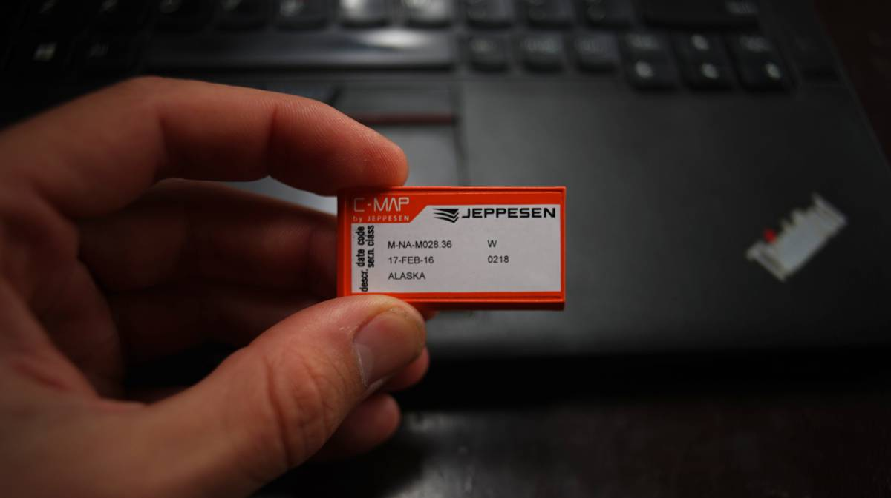
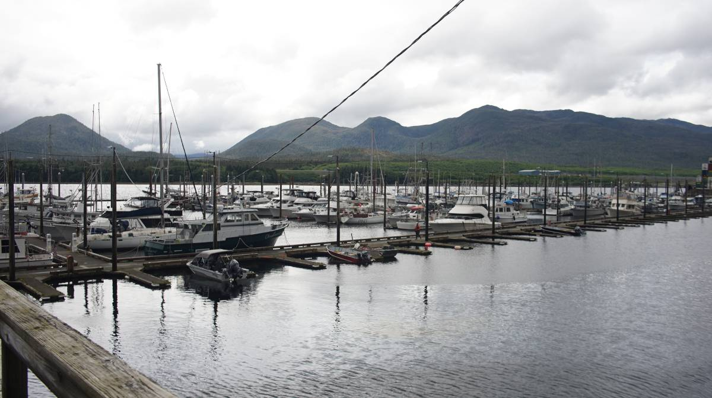
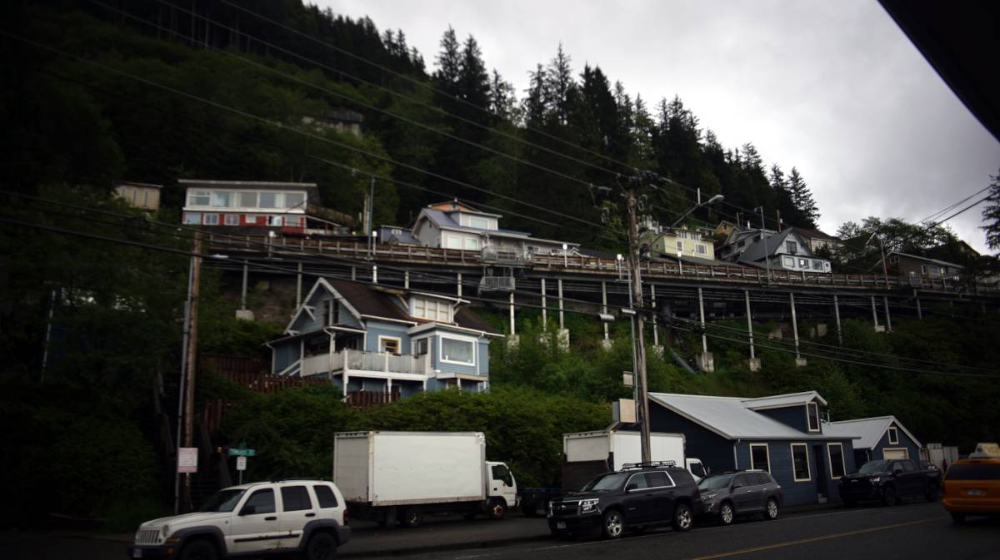
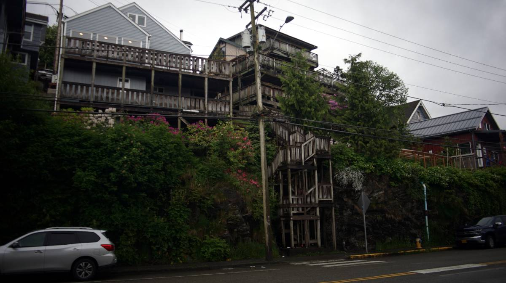

ketchikan

(Sourced from Our Town, a magazine published by Historic Ketchikan Inc.)
On June 2nd 2024 we arrived in Ketchikan, after a 35 NM-long sail from Foggy Bay. Boats checking into Alaska from Canada can request permission to anchor in Foggy Bay to help cut down the transit, this is what we chose to do because we are not a fast boat, especially if we have to motor.
We thought about waiting in an anchorage north of Dundas Island to then sail straight to Ketchikan, but there was a few days of big weather coming(that same evening, in fact), so we felt a bit hurried to get past Dixon Entrance. The winds were forecast to rise to 30-40 kts out of the Southeast on the 1st, then to 45 kts, and would stay high until Tuesday the 4th. Had we stopped at Dundas Island, we might have been trapped there for 3 days(worse is there is no VHF or cell reception in the anchorage). The weather would not reach as high as Foggy Bay that night, so we could anchor there and then leave the next morning for Ketchikan. While still in cell signal range, we called the CBP to alert them that we had planned to anchor in Foggy Bay, they said it was fine. As soon as we arrived in the US, we changed the chart card for our chartplotter for South East Alaska waters, and rolled time back one hour. For a few weeks, we'd be living on Sitka time.
Foggy Bay. An anchorage with an entrance that requires a bit of careful navigation, some rocks lie in the outer bay, and others in the entrance channel. We proceeded in slowly, avoiding all obstructions. The tide was low, so we could see more than we would have at high tide. Only one other boat was in the bay at anchor, a boat we shared the Prince Rupert Yacht and Rowing Club docks with. We found a spot, with a max of 36 ft(at the highest tide), in mud. At our anchor spot, we could look at the outer bay through a gap between the islands. Even if it was blowing 20-30 from the southeast in Dixon Entrance, we felt nothing, and nothing again when the wind was forecast to rise to 30-40 out of the southeast next morning, when we left for Ketchikan.
We left Foggy Bay on very calm waters at 0700. We had checked the forecast for Clarence Strait, the weather area which includes Revillegegido Channel, and it called for 25 kts out of the southeast. It may have been blowing that hard in Clarence Strait, but we felt nothing here... bad news, it meant we had no wind to sail with, we assumed that we would get some of the wind. Luckily, our path crosses many long-armed inlets and other waterways, we had wind blowing out of all of them(Boca De Quadra and Behm Canal) Unfortunately, this is the only wind we had, and only lasted for as long as were at the mouth of each inlet.
There was rain then too, light, persistent rain. Visibility was low, but we could still make out some of the islands and markers ahead. Our AIS showed many passenger ships, we looked often to make sure we knew where they were going so we could stay out of their way. Cruiseships move fast, in low visibility we might make them out too late and they'll not notice if they mowed down a small sailboat, "just a flesh wound!"
We only started seeing cruiseships when near Tongass Narrows. There was a lot of fishing boats, smaller passenger boats too, two of them stopped to let us sail through-many boats don't get to do this, we were surprised. The three inlets(Thorne Arm, Caroll Inlet and George Inlet) preceeding Tongass Narrows had good wind and propelled us at 5.6 knots.
At this point, we weren't sure where we were going to dock. When mooring in Ketchikan, there are 3 marinas to choose from: Thomas Basin, Casey Moran and Bar Harbor. All of these marinas have two mooring options:
- Open moorage, which is first come first served on certain docks.
- Hot berthing, in which you take the space of a boat that has vacated their slip. If the owner returns you may have to move the boat to another vacated slip.
The first marina is Thomas Basin(which has one whole finger for the Yacht Club), then comes Casey Moran, both are close to the tourist area and lie in the shadows of the cruiseships (Ketchikan can accommodate many at once, it's kind of horrific). Casey Moran is mostly open moorage, while Thomas Basin only has a few fingers for open moorage. Next is Bar Harbor, south and north, they offer open moorage but only on the end slips. Bar Harbor is closer to the hardware store, chandlery, grocery and liquor stores. Most of the open moorage appeared occupied, we didn't care to moor our small winged bird near the harbor giants, so we pushed on and went to Bar Harbor.
The Ketchikan Harbourmaster assigns slips for the aforementionned marinas, we called them on channel 73 to request space in Bar Harbour. They assigned us a slip in the north section. We had a map of all of the marinas, the city of Ketchikan hosts them on their website as PDFs.
Checking in
We've checked into the US before, but all ports are different. Some places require you to go to a specific dock and to call authorities from a phone provided at that same dock, but not in Ketchikan. Here, you find a mooring spot, then you call them to say where you are and that you've arrived. It is possible to report your arrival using the CBP app Roam, but our phones are too old so we can't use it. When we tried calling, the number never dialed... we got a plan for the US that permits phone calls but it wasn't working. The only option left was to go see the harbormaster to use their phone to call CBP. This wasn't ideal, technically you're not allowed to leave the boat before checking in.
The office was closing at 1700, it was 1640. Someone was still in the office when we arrived, but she was moments away from leaving. Seeing our predicament, the woman, Robin, let us use the phone to call them. We were told that customs would board our boat, but they instead requested that we visit the federal building, a 40-minute walk from our mooring spot(if staying in Casey Moran or Thomas Basin then the Federal building is close). Robin offered us a ride, she gave us papers to fill for Pino's current mooring spot, "fill it in when you get back, and give it to us tomorrow morning." What a kind, kind person. Robin dropped us off in front of a salmon-colored building, the federal building. "It's pink, but people don't like when we say pink, so we say salmon," the officer on the phone said to me. Salmon it is.
Checking in was a breeze, they took down our information and gave us a cruising license. Even with a cruising license, it is necessary to report our arrival if stopping in big cities like Juneau, Sitka, or Hoonah. They didn't come aboard Pino, nor did they ask about produce, or anything else. It's funny now to think that a dock neighbor in Prince Rupert gave us a ton of their produce thinking they'd have to toss them on arrival... we just figured we'd chance it-we were right to, in any case, nothing we eat ever leaves the boat.
The problem with downtown
On the way back, we got to explore a bit of downtown Ketchikan. There were no tourists around at 1800, the cruiseships passengers had all boarded and moved on. They are gone now, but are soon soon replaced by more the next day. The comings and goings of these pleasure-seeking behemoths lasts all summer.
The ships have shaped downtown Ketchikan for the worst, with 1 out of 3 shops selling jewlery and diamonds. "Get your shiny rocks here!" Just on the walk back to the boat from the federal building, we counted 6, with many more in the back roads. The downtown area is not a big place, this many packed in one small area makes no sense. Any space taken up by such a store could have been a small restaurant, bakery, pub, or a store selling local crafts, something that could have at least added culture to the downtown area. This part of town could have been special, but cruiseships have robbed it of its identity. We walked through it, but would not go back... it's just too, too sad.
North of downtown
A lot of the city is built on a hill, with houses mounted on stilts, with the way to them accessible by long wooden staircases. You could walk up to a road at the top of the stairs, like you would cross one street to get to another. This is such a beautiful way to build a city. Some houses share a stairwell, some have their own. We walked through a few of those elevated streets, but it is hard to tell where to turn without a map. Some roads lead deeper into the forest, others are dead-ends, or private. When we returned to the boat from downtown the second time, we took the back roads home, it is nicer than walking along the road with the traffic, tourists and diamond shops.
Rain is a mainstay of this city, measured in feet rather than in inches, and present 234 days per year. In July, on average, 16 days out of 31 are dry. Sunny days are few, but the rain does mean that the place is very, very beautiful and green. Gum boots are the norm, as are good waterproof jackets.
Many parts of this city are quite beautiful, but there are a lot of cars. The road to downtown is a noisy place, but walking through the houses on the elevated path does offer some respite. We will stay here for a few days, to wait for some weather to pass before moving to our next anchorage.